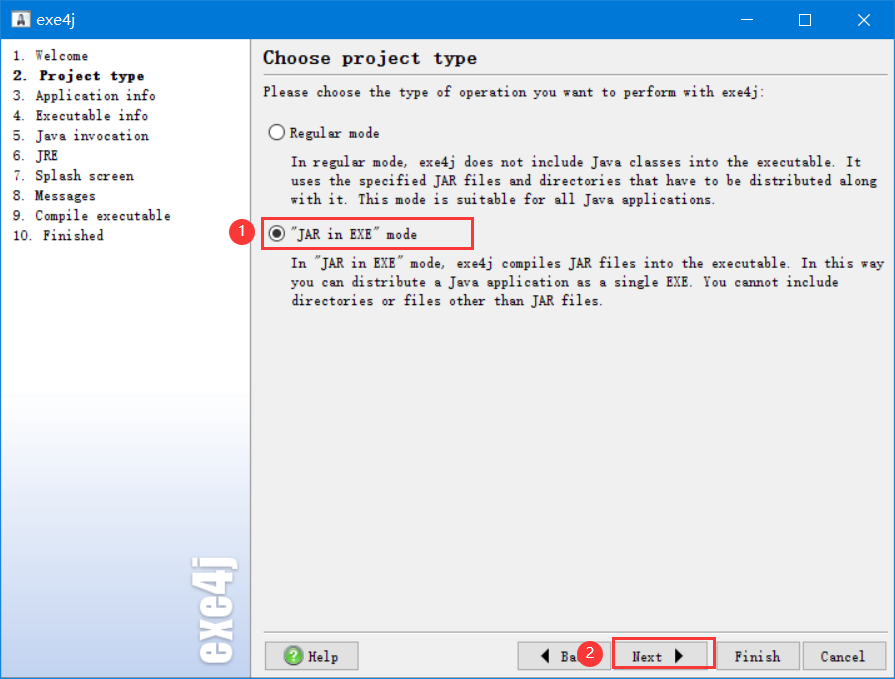
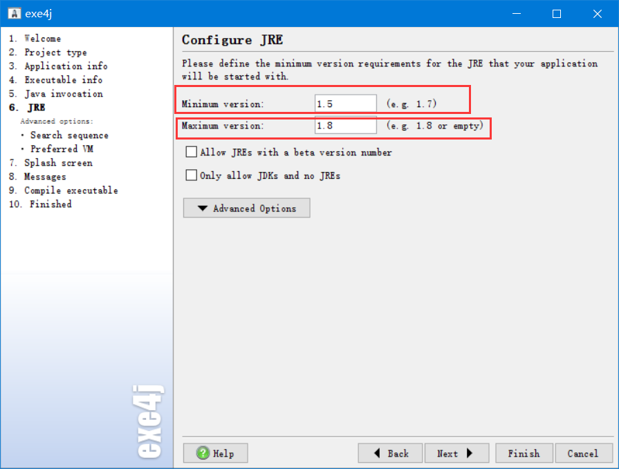

1.将Java程序导出的jar文件打包为exe文件
1.1打开安装好的exe4j软件，首先看到的是一个欢迎界面，直接【next】就可以了
1.2在第二步中我们选择【JAR in EXE mode】，然后【next】
1.3.第三步中需要输入程序的缩写名字和指明输出目录，就是程序的保存目录，按照自己的情况设置就行，没啥特别要求，然后【next】

1.4.需要指定程序的名字，设置程序的图标，注意，程序图标要用ico格式的图片

1.5.然后我们在左边的菜单栏中选择【32 bit or 64 bit】，勾上【Generate 64 bit executeable】，不勾选为32位，勾选为64位

1.6.添加我们的jar包，点击右边绿色的 “+”号，然后选择【Archive】，打开浏览目录，找到我们的jar包，然后选择【打开】，【ok】


1.7.然后选择主类，在Main class后面，选择【浏览】，找到主类，添加上主类，然后【next】

1.8.设置JRE的最小最高版本，我们根据自己的情况设置，小版本设置成1.5，大版本设置成1.8，就行
1.9.然后点击【Advanced Options】，选择【Search sequence】，将我们的JRE添加到软件中，这样的话，我们的代码可以在别的没有安装Java环境的电脑上运行；点击右边的添加，选择【Directory】，然后选择【浏览】，找到我们的JRE，然后添加（添加之后把前面的删掉然后加一个点，这里我写的是.\jre1.8.0_73，使用相对路径，之后把生成的程序和jre的文件夹拷贝到同一个文件夹下）
1.10.然后点击左侧的【Preferred VM】，选择【Client hotspot VM】，然后【next】

1.11.其余的步骤直接默认就行了，这样生成的exe文件就能正常运行了！
2.将jre环境和exe文件一起打包为程序安装包
需要安装Inno Setup
菜单栏→新建，打开脚本向导
直接下一步

填写应用程序名称和应用程序版本，其他两个可以选填。

这一步可以默认，应用程序所在的文件夹默认为上一步填的应用程序名称

主执行文件选择用exe4j打包好的那个exe文件，然后点击添加文件夹选中jre文件夹，下一步

直接下一步

接着下一步
继续下一步
还是下一步

选择安装程序的保存位置、安装程序文件名、安装程序的图标。安装密码为可选项
继续下一步
点击完成

在生成的脚本中找到**[Files],然后找到刚刚添加的文件夹路径，在文件加路径后的{app}后边加上\jre，jre就是程序安装后在安装路径下生成的文件夹名称，这里文件夹的名称与上边1.9中填写的路径要保持一致**，如果上边是跟我的文件夹名一样的，那这里也要写为.\jre1.8.0_73。

然后在菜单栏点击构建→编译即可。